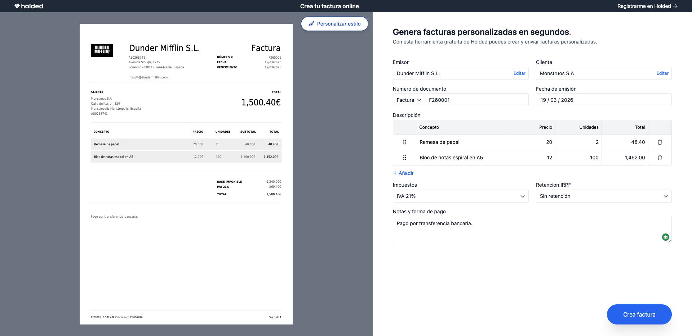
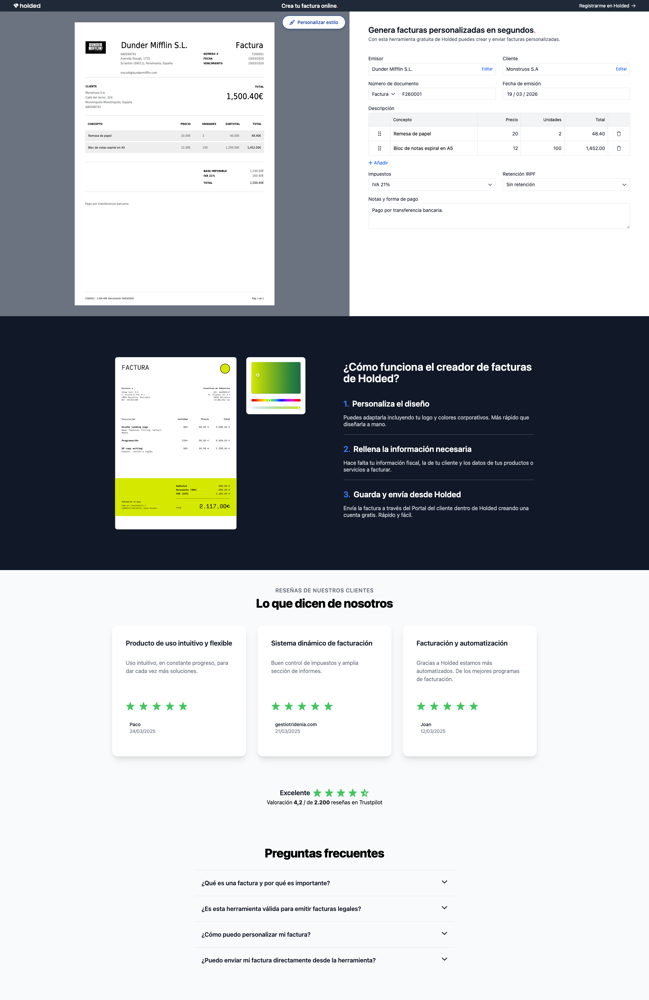
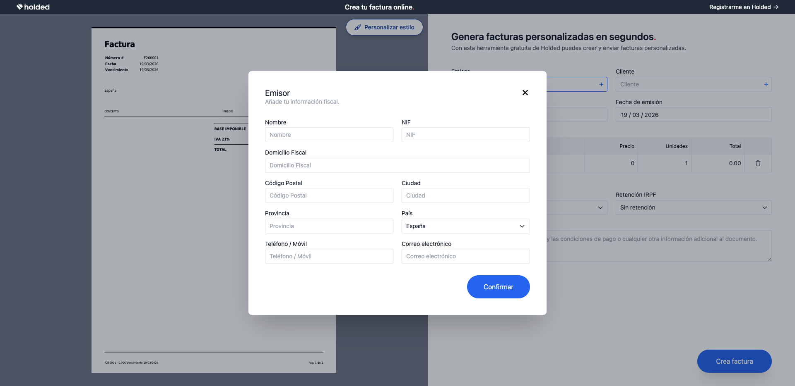
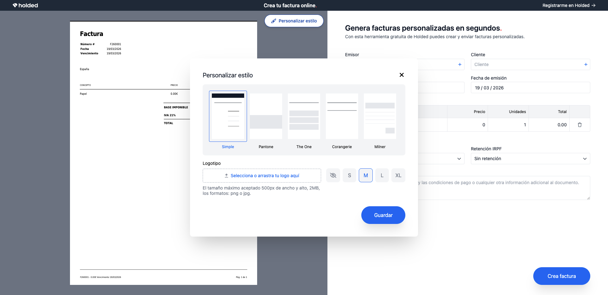
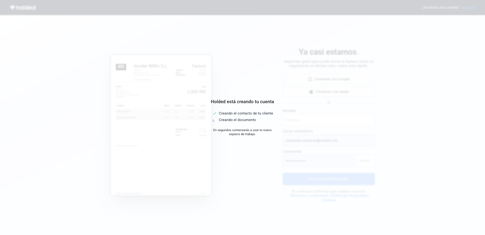
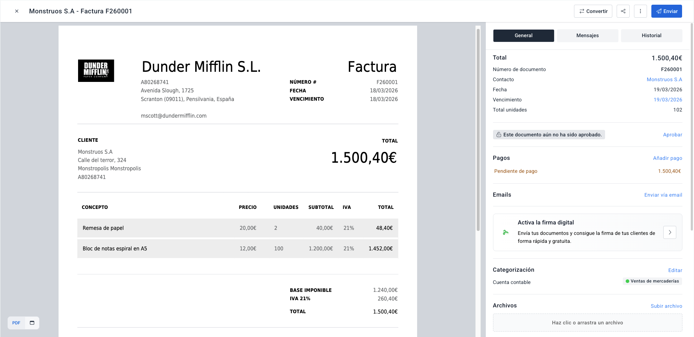
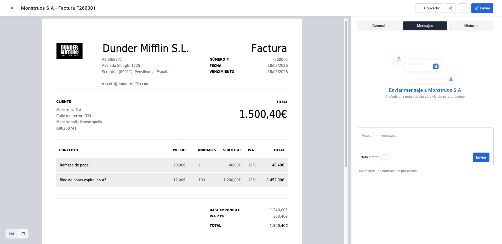

Creador de facturas gratuito
Holded es un software con muchas funcionalidades. Esa es su fortaleza, pero también su barrera de entrada: los usuarios potenciales se abruman antes de empezar a usarlo.
El reto era diseñar una experiencia que permitiera entrar en contacto con Holded sin fricciones a través de su funcionalidad más usada, la facturación. Creamos esta herramienta gratuita, que es prácticamente igual a lo que se van a encontrar dentro de la plataforma, como anzuelo para poder usar el producto incluso antes del registro.

User journey para exponer el producto sin fricciones
El diseño del flujo prioriza la acción inmediata sobre el formulario. El usuario crea su factura antes de comprometerse.
El usuario rellena los datos de la factura.
Nombre, concepto, importe, lo que necesite. Sin cuenta, sin fricción.
Le da a enviar.
En ese momento ya tiene su factura.
Crea cuenta gratuita para guardarla y enviarla.
Ya tiene lo que ha venido a buscar, su factura, ya tiene el valor del producto. El registro es la consecuencia natural.
La factura se envía desde Holded.
Sin otras herramientas ni intermediarios. Exposición orgánica al producto.
El usuario tiene 14 días gratis para explorar el producto completo.
Onboarding suave, sin presión.






Decisiones de experiencia y flujo de usuario
Popup en lugar de desplegable
Los campos de introducción de datos aparecen en un popup modal, no en un desplegable inline. Esto evita el scroll y mantiene al usuario en contexto. La factura sigue visible detrás del popup, reforzando el valor ya creado.
Social proof antes del registro
La landing incluye testimonios de clientes antes de que aparezca cualquier CTA de registro. El usuario llega con más confianza al momento de decisión.
Tono directo, sin tecnicismos
Los textos evitan el vocabulario de software ("generar", "configurar", "gestionar") y usan el lenguaje del usuario ("crear", "enviar", "cobrar"). El producto es accesible desde el primer titular.
Sección de instrucciones
A pesar de que la interfaz es bastante intuitiva, se refuerza la facilidad de uso con unas instrucciones que ya adelantan a la persona usuaria cómo va a ser el proceso.
Registro automático
El usuario no tiene que hacer nada: al clicar para crear la factura, Holded genera automáticamente una cuenta de prueba de 14 días gratis.
Más que una herramienta de SEO
El flujo demostró que el creador de facturas gratuito funciona como un canal de adquisición real, no solo como recurso SEO.
54.384
Visitas totales a la herramienta
30,9%
Creó y envió la factura
36,7%
De esos se registró en Holded